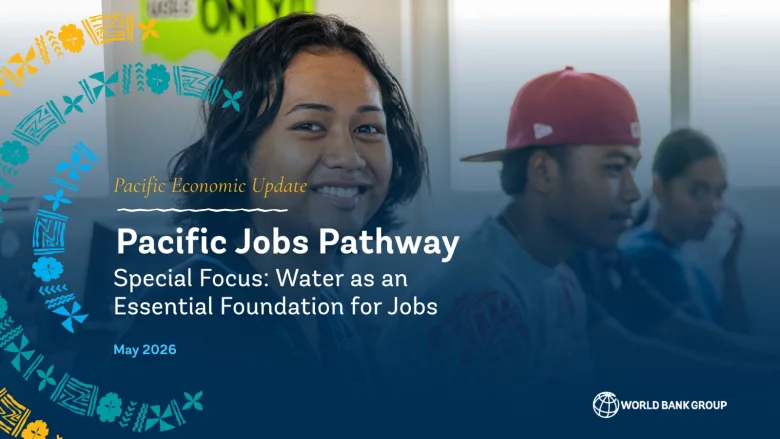

Building fiscal resilience across the Pacific

Pacific island countries face frequent shocks, volatile revenues, and high recovery costs — but also bring deep experience and a strong tradition of cooperation. This platform supports policymakers, researchers, and development partners in strengthening fiscal systems that can absorb shocks, protect essential investment and services, rebuild buffers, and sustain long-term growth.
The focus is durability: moving from repeated post-shock repair toward fiscal systems that manage risks, preserve fiscal space, and support a more stable and prosperous Pacific.
 Supported by Japan PHRD, the platform convenes global and regional expertise to share practical approaches and advance fiscal resilience across the Pacific.
Supported by Japan PHRD, the platform convenes global and regional expertise to share practical approaches and advance fiscal resilience across the Pacific.
Understand fiscal resilience
Explore how shocks affect revenues, spending needs, debt dynamics, and the rebuilding of fiscal buffers across Pacific island economies.
Share practical knowledge
Bring together country experiences, regional evidence, and analytical tools to support better fiscal planning and crisis preparedness.
Build a community of practice
Share knowledge, connect with fellow experts, researchers, and policy practitioners, and exchange practical insights across the Pacific.